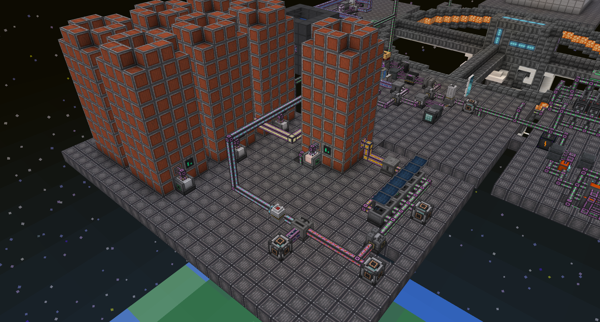

Fusion fuel is relatively cheaper then fission fuel dew to you needing energy to make and is fully renewable without other mod intervention (like Mystical Agriculture) it consists of too ingredients deuterium and tritium
To make tritium you need to pump water into hot Thermal Evaporation Plant this will make brine then brine is piped into another Thermal Evaporation Plant to make Liquid Lithium Liquid Lithium is Decondensentrated in Rotary Condensentrator in Decondensentrating mode into Lithium (the arrow points left) to switch the mode you need to press the button with a switch icon in top left corner of the machine GUI. Lithium is then piped into Solar Neutron Activator with makes tritium.
To make Deuterium you need to a pump with filter upgrade the pump with the filter upgrade will pump Heavy Water instead of usual Water then Heavy Water is ten piped into Electrolytic Separator to split it into Deuterium and Oxygen Also there is option to premix Deuterium end tritium to make d-t fuel but its main use is to fill a Hohlraum to start fusion reaction and not fueling reactor because in that case you cant control the burn rate of the reactor.